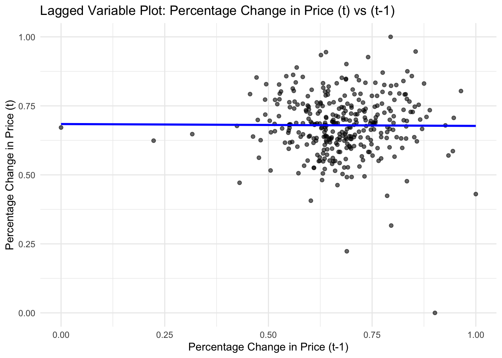
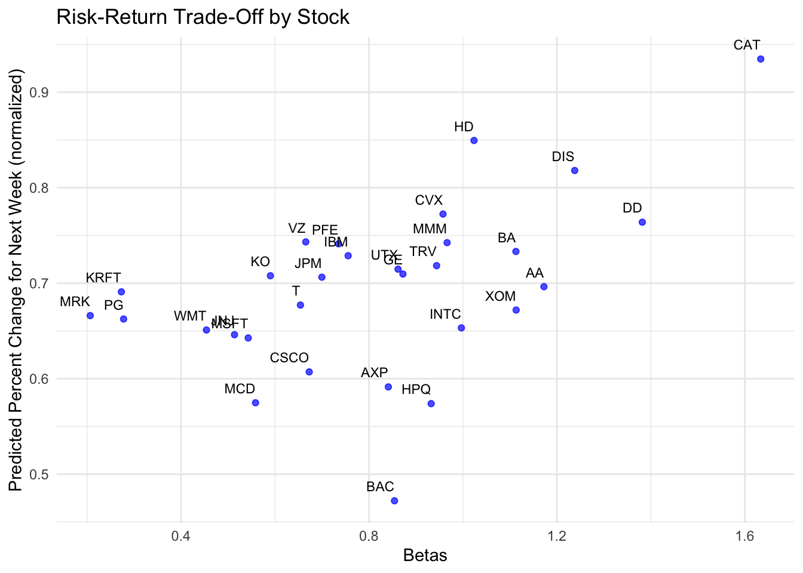

pacman::p_load(MASS, tidyverse, here, skimr, rpart, dplyr, VIM, corrplot, car, quantmod, ggplot2, tree, e1071)
select <- dplyr::selectCase Study 3 Sandbox
Case Study 3 Sandbox
raw_index_data <- read.csv(here('Case Study 3', 'dow_jones_index.data'))
raw_index_names <- read.csv(here('Case Study 3', 'dow_jones_index.names'))
SP500_raw <- read.csv(here('Case Study 3', 'SP500.csv'), sep = ',', fileEncoding = 'latin1')str(raw_index_data)'data.frame': 750 obs. of 16 variables:
$ quarter : int 1 1 1 1 1 1 1 1 1 1 ...
$ stock : chr "AA" "AA" "AA" "AA" ...
$ date : chr "1/7/2011" "1/14/2011" "1/21/2011" "1/28/2011" ...
$ open : chr "$15.82" "$16.71" "$16.19" "$15.87" ...
$ high : chr "$16.72" "$16.71" "$16.38" "$16.63" ...
$ low : chr "$15.78" "$15.64" "$15.60" "$15.82" ...
$ close : chr "$16.42" "$15.97" "$15.79" "$16.13" ...
$ volume : int 239655616 242963398 138428495 151379173 154387761 114691279 80023895 132981863 109493077 114332562 ...
$ percent_change_price : num 3.79 -4.43 -2.47 1.64 5.93 ...
$ percent_change_volume_over_last_wk: num NA 1.38 -43.02 9.36 1.99 ...
$ previous_weeks_volume : int NA 239655616 242963398 138428495 151379173 154387761 114691279 80023895 132981863 109493077 ...
$ next_weeks_open : chr "$16.71" "$16.19" "$15.87" "$16.18" ...
$ next_weeks_close : chr "$15.97" "$15.79" "$16.13" "$17.14" ...
$ percent_change_next_weeks_price : num -4.428 -2.471 1.638 5.933 0.231 ...
$ days_to_next_dividend : int 26 19 12 5 97 90 83 76 69 62 ...
$ percent_return_next_dividend : num 0.183 0.188 0.19 0.186 0.175 ...skim(raw_index_data)| Name | raw_index_data |
| Number of rows | 750 |
| Number of columns | 16 |
| _______________________ | |
| Column type frequency: | |
| character | 8 |
| numeric | 8 |
| ________________________ | |
| Group variables | None |
Variable type: character
| skim_variable | n_missing | complete_rate | min | max | empty | n_unique | whitespace |
|---|---|---|---|---|---|---|---|
| stock | 0 | 1 | 1 | 4 | 0 | 30 | 0 |
| date | 0 | 1 | 8 | 9 | 0 | 25 | 0 |
| open | 0 | 1 | 6 | 7 | 0 | 722 | 0 |
| high | 0 | 1 | 6 | 7 | 0 | 713 | 0 |
| low | 0 | 1 | 6 | 7 | 0 | 711 | 0 |
| close | 0 | 1 | 6 | 7 | 0 | 711 | 0 |
| next_weeks_open | 0 | 1 | 6 | 7 | 0 | 720 | 0 |
| next_weeks_close | 0 | 1 | 6 | 7 | 0 | 715 | 0 |
Variable type: numeric
| skim_variable | n_missing | complete_rate | mean | sd | p0 | p25 | p50 | p75 | p100 | hist |
|---|---|---|---|---|---|---|---|---|---|---|
| quarter | 0 | 1.00 | 1.52 | 0.50 | 1.00 | 1.00 | 2.00 | 2.00 | 2.000000e+00 | ▇▁▁▁▇ |
| volume | 0 | 1.00 | 117547801.41 | 158438089.36 | 9718851.00 | 30866243.25 | 53060885.00 | 132721823.75 | 1.453439e+09 | ▇▁▁▁▁ |
| percent_change_price | 0 | 1.00 | 0.05 | 2.52 | -15.42 | -1.29 | 0.00 | 1.65 | 9.880000e+00 | ▁▁▆▇▁ |
| percent_change_volume_over_last_wk | 30 | 0.96 | 5.59 | 40.54 | -61.43 | -19.80 | 0.51 | 21.80 | 3.274100e+02 | ▇▃▁▁▁ |
| previous_weeks_volume | 30 | 0.96 | 117387644.83 | 159232228.00 | 9718851.00 | 30678320.00 | 52945558.00 | 133322975.25 | 1.453439e+09 | ▇▁▁▁▁ |
| percent_change_next_weeks_price | 0 | 1.00 | 0.24 | 2.68 | -15.42 | -1.22 | 0.10 | 1.85 | 9.880000e+00 | ▁▁▆▇▁ |
| days_to_next_dividend | 0 | 1.00 | 52.53 | 46.34 | 0.00 | 24.00 | 47.00 | 69.00 | 3.360000e+02 | ▇▃▁▁▁ |
| percent_return_next_dividend | 0 | 1.00 | 0.69 | 0.31 | 0.07 | 0.53 | 0.68 | 0.85 | 1.560000e+00 | ▃▇▇▂▂ |
anyNA(raw_index_data)[1] TRUE#It appears we have missing values, We will need to address this in some of our next steps but first we’ll divide the data into train and test
missing_values <- colSums(is.na(raw_index_data))
missing_values quarter stock
0 0
date open
0 0
high low
0 0
close volume
0 0
percent_change_price percent_change_volume_over_last_wk
0 30
previous_weeks_volume next_weeks_open
30 0
next_weeks_close percent_change_next_weeks_price
0 0
days_to_next_dividend percent_return_next_dividend
0 0 #Splitting data into training (Q1) and testing (Q2)
train_data <- subset(raw_index_data, quarter == 1) # Training data (Q1: Jan-Mar)
test_data <- subset(raw_index_data, quarter == 2) # Testing data (Q2: Apr-Jun)#Running correlation check among the numeric variables
cor_matrix <- cor(train_data[, sapply(train_data, is.numeric)], use = "complete.obs")Warning in cor(train_data[, sapply(train_data, is.numeric)], use =
"complete.obs"): the standard deviation is zerocor_matrix quarter volume percent_change_price
quarter 1 NA NA
volume NA 1.00000000 -0.221694454
percent_change_price NA -0.22169445 1.000000000
percent_change_volume_over_last_wk NA 0.19768437 -0.358896850
previous_weeks_volume NA 0.86432993 -0.045258948
percent_change_next_weeks_price NA -0.13167362 0.010374354
days_to_next_dividend NA -0.06414402 0.035086236
percent_return_next_dividend NA -0.27603768 -0.005173395
percent_change_volume_over_last_wk
quarter NA
volume 0.19768437
percent_change_price -0.35889685
percent_change_volume_over_last_wk 1.00000000
previous_weeks_volume -0.14112278
percent_change_next_weeks_price 0.04455945
days_to_next_dividend -0.01836656
percent_return_next_dividend -0.01906340
previous_weeks_volume
quarter NA
volume 0.86432993
percent_change_price -0.04525895
percent_change_volume_over_last_wk -0.14112278
previous_weeks_volume 1.00000000
percent_change_next_weeks_price -0.15477083
days_to_next_dividend -0.06300760
percent_return_next_dividend -0.27870205
percent_change_next_weeks_price
quarter NA
volume -0.131673616
percent_change_price 0.010374354
percent_change_volume_over_last_wk 0.044559445
previous_weeks_volume -0.154770828
percent_change_next_weeks_price 1.000000000
days_to_next_dividend -0.005275484
percent_return_next_dividend 0.109565562
days_to_next_dividend
quarter NA
volume -0.064144021
percent_change_price 0.035086236
percent_change_volume_over_last_wk -0.018366565
previous_weeks_volume -0.063007605
percent_change_next_weeks_price -0.005275484
days_to_next_dividend 1.000000000
percent_return_next_dividend 0.100206077
percent_return_next_dividend
quarter NA
volume -0.276037679
percent_change_price -0.005173395
percent_change_volume_over_last_wk -0.019063402
previous_weeks_volume -0.278702047
percent_change_next_weeks_price 0.109565562
days_to_next_dividend 0.100206077
percent_return_next_dividend 1.000000000#There appears to be correlation between ‘volume’ and keep ‘previous_weeks_volume’-these two had >.8 (high correlation). Which one would be important to keep for predicting our target variable [percent_change_next_weeks_price]?
#I’ve decided to parse out the data variables I believe will be most useful moving forward
selected_vars <- c('date', 'stock', "percent_change_next_weeks_price", "percent_change_price",
"percent_change_volume_over_last_wk", "previous_weeks_volume",
"days_to_next_dividend", "percent_return_next_dividend",
"open", "high", "low", "close")
train_data_filtered <- train_data[,selected_vars]
test_data_filtered <- test_data[,selected_vars]No issue with the variables selected except no date or stock variable?
#Convert necessary columns to numeric
train_data_filtered <- train_data_filtered %>%
mutate(across(c(open, high, low, close), ~ as.numeric(gsub("[$,]", "", .)))) # Clean and convert
test_data_filtered <- test_data_filtered %>%
mutate(across(c(open, high, low, close), ~ as.numeric(gsub("[$,]", "", .)))) #impute missing values using KNN in order to maintain integrity of any data patterns
# KNN imputation on the training data
train_data_imputed <- kNN(train_data_filtered, variable = c("percent_change_volume_over_last_wk", "previous_weeks_volume"),
k = 5, imp_var = F) # Adjust k (number of neighbors) as necessary
# Should return 'FALSE' if no missing values
anyNA(train_data_imputed)[1] FALSEVariables were selected before but here you went back to your original un-selected training dataset. Adjusted to go with the datset with variable selections. I’m pretty neutral on imputing the data, my only concern here is that we may need to explain reasoning for choosing KNN imputation, and check assumptions for using this method. My original gut check with this is too assume the same volume change, so percent_change_over_last_week would be zero for imputed values, and previous_weeks_volume would equal volume.
#Apply scaling in prep for modeling
normalize_min_max <- function(x) {
(x - min(x, na.rm = TRUE)) / (max(x, na.rm = TRUE) - min(x, na.rm = TRUE))
}
train_data_scaled <- train_data_imputed %>%
mutate(across(where(is.numeric), normalize_min_max))
test_data_scaled <- test_data_filtered %>%
mutate(across(where(is.numeric), normalize_min_max))#Chage Date variable to true date
train_data_scaled <- train_data_scaled %>%
mutate(date = parse_date_time(date, '%m/%d/%Y'))
test_data_scaled <- test_data_scaled %>%
mutate(date = parse_date_time(date, '%m/%d/%Y'))#Create lagged Variables on scaled data
train_data_scaled %>%
arrange(date) %>%
mutate(
percent_change_price_lag1 = lag(percent_change_price)
) %>% head() date stock percent_change_next_weeks_price percent_change_price
1 2011-01-07 AA 0.4770919 0.8338412
2 2011-01-07 AXP 0.8705239 0.7754923
3 2011-01-07 BA 0.7098931 0.8811481
4 2011-01-07 BAC 1.0000000 0.7945878
5 2011-01-07 CAT 0.7065060 0.6393762
6 2011-01-07 CSCO 0.7252142 0.7796038
percent_change_volume_over_last_wk previous_weeks_volume
1 0.08825424 0.08475325
2 0.06807195 0.02822541
3 0.08777741 0.01771123
4 0.15240536 0.67354126
5 0.23260218 0.01243852
6 0.03435266 0.20297610
days_to_next_dividend percent_return_next_dividend open high
1 0.07738095 0.078157861 0.014022729 0.016286645
2 0.26488095 0.227004526 0.196650495 0.204429967
3 0.09821429 0.360186281 0.348508008 0.364039088
4 0.16071429 0.003070525 0.000930418 0.003061889
5 0.03273810 0.269484482 0.536120157 0.525016287
6 0.24107143 0.147166604 0.044792982 0.044169381
low close percent_change_price_lag1
1 0.016415321 0.020330033 NA
2 0.198785533 0.204752475 0.8338412
3 0.351528093 0.369900990 0.7754923
4 0.003202989 0.006006601 0.8811481
5 0.527025224 0.530627063 0.7945878
6 0.047110637 0.050363036 0.6393762Previous method to lag variables does not account for the stock itself. So lag value when ordered by date will pull the values for same date across different stocks.
#Create lagged variables on scaled data version 2
train_data_scaled <- train_data_scaled %>%
group_by(stock) %>%
arrange(date) %>%
mutate(
percent_change_price_lag1 = lag(percent_change_price, n = 1)
) %>% ungroup()
test_data_scaled <- test_data_scaled %>%
group_by(stock) %>%
arrange(date) %>%
mutate(
percent_change_price_lag1 = lag(percent_change_price, n = 1)
) %>% ungroup()Group by should solve earlier issue
#Plotting the lagged variables to visualize correlation
ggplot(train_data_scaled, aes(x = percent_change_price_lag1, y = percent_change_price)) +
geom_point(alpha = 0.6) +
geom_smooth(method = "lm", color = "blue", se = FALSE) +
labs(
title = "Lagged Variable Plot: Percentage Change in Price (t) vs (t-1)",
x = "Percentage Change in Price (t-1)",
y = "Percentage Change in Price (t)"
) +
theme_minimal()`geom_smooth()` using formula = 'y ~ x'Warning: Removed 30 rows containing non-finite outside the scale range
(`stat_smooth()`).Warning: Removed 30 rows containing missing values or values outside the scale range
(`geom_point()`).
#Now applying data subset variables to a regression tree, our target variable is [percent_change_next_weeks_price] so we’re going to use this regression tree to assess our features importance (which ones are most predictive?)
#wrapper outside of tree model/use for loop == stock name/store rmse/mape into frame
tree_model <- rpart(percent_change_next_weeks_price ~ ., data = train_data_scaled, method = "anova")
print(tree_model)n= 360
node), split, n, deviance, yval
* denotes terminal node
1) root 360 4.21490000 0.6817216
2) stock=BAC,CSCO,HPQ,INTC,JNJ,MRK,MSFT,PG 96 1.58025500 0.6399035
4) percent_change_price_lag1>=0.617556 66 1.30698900 0.6248981
8) open< 0.04828205 14 0.60864620 0.5572203 *
9) open>=0.04828205 52 0.61695460 0.6431190
18) date>=1.297685e+09 21 0.27388060 0.6080194
36) stock=HPQ,INTC,MSFT 10 0.14957850 0.5486815 *
37) stock=JNJ,MRK,PG 11 0.05708331 0.6619629 *
19) date< 1.297685e+09 31 0.29967630 0.6668962
38) stock=CSCO,JNJ,MRK,MSFT,PG 21 0.17238390 0.6353517 *
39) stock=HPQ,INTC 10 0.06251427 0.7331397 *
5) percent_change_price_lag1< 0.617556 30 0.22571160 0.6729155
10) percent_return_next_dividend>=0.1674097 22 0.09244524 0.6480928 *
11) percent_return_next_dividend< 0.1674097 8 0.08243244 0.7411781 *
3) stock=AA,AXP,BA,CAT,CVX,DD,DIS,GE,HD,IBM,JPM,KO,KRFT,MCD,MMM,PFE,T,TRV,UTX,VZ,WMT,XOM 264 2.40571700 0.6969282
6) date>=1.297685e+09 132 1.07594300 0.6729449
12) date< 1.300104e+09 88 0.58674680 0.6381490
24) stock=AA,AXP,BA,CAT,DD,DIS,GE,HD,IBM,JPM,MCD,MMM,T,TRV,UTX,VZ,WMT,XOM 72 0.34759400 0.6242699
48) percent_change_price>=0.5845257 59 0.26650510 0.6107899
96) stock=AA,CAT,DD,GE,HD,MCD,MMM,UTX,WMT,XOM 29 0.12307860 0.5828548 *
97) stock=AXP,BA,DIS,IBM,JPM,T,TRV,VZ 30 0.09891940 0.6377939 *
49) percent_change_price< 0.5845257 13 0.02171200 0.6854481 *
25) stock=CVX,KO,KRFT,PFE 16 0.16287160 0.7006049 *
13) date>=1.300104e+09 44 0.16955660 0.7425367
26) stock=AXP,DD,DIS,GE,HD,JPM,KRFT,MCD,MMM,PFE,TRV,WMT,XOM 26 0.06658794 0.7146048 *
27) stock=AA,BA,CAT,CVX,IBM,KO,T,UTX,VZ 18 0.05338311 0.7828828 *
7) date< 1.297685e+09 132 1.17792100 0.7209116
14) stock=AA,AXP,BA,KO,KRFT,MCD,PFE,T,VZ,WMT 60 0.56579300 0.6850891
28) days_to_next_dividend>=0.03869048 52 0.40438130 0.6703832
56) percent_return_next_dividend< 0.2221778 7 0.04577601 0.5822318 *
57) percent_return_next_dividend>=0.2221778 45 0.29574920 0.6840957 *
29) days_to_next_dividend< 0.03869048 8 0.07706945 0.7806772 *
15) stock=CAT,CVX,DD,DIS,GE,HD,IBM,JPM,MMM,TRV,UTX,XOM 72 0.47097100 0.7507636
30) percent_change_price_lag1>=0.6350354 64 0.38402190 0.7420894 *
31) percent_change_price_lag1< 0.6350354 8 0.04360967 0.8201574 *printcp(tree_model)
Regression tree:
rpart(formula = percent_change_next_weeks_price ~ ., data = train_data_scaled,
method = "anova")
Variables actually used in tree construction:
[1] date days_to_next_dividend
[3] open percent_change_price
[5] percent_change_price_lag1 percent_return_next_dividend
[7] stock
Root node error: 4.2149/360 = 0.011708
n= 360
CP nsplit rel error xerror xstd
1 0.055392 0 1.00000 1.00733 0.13675
2 0.033490 3 0.83382 0.92768 0.12891
3 0.020011 4 0.80033 1.07174 0.14363
4 0.018098 5 0.78032 1.08223 0.14315
5 0.015296 6 0.76222 1.10654 0.14376
6 0.014913 8 0.73163 1.12249 0.14392
7 0.014087 9 0.71672 1.11152 0.14351
8 0.013871 10 0.70263 1.12769 0.14442
9 0.012061 13 0.66102 1.14059 0.14418
10 0.011764 14 0.64896 1.20058 0.15080
11 0.010559 15 0.63719 1.21103 0.15075
12 0.010282 16 0.62663 1.23132 0.15137
13 0.010000 17 0.61635 1.22840 0.15077plot(tree_model, uniform = TRUE, main = "Regression Tree for Stock Price Prediction")
text(tree_model, use.n = TRUE, all = TRUE, cex = 0.7)#this looks nuts, not sure what to change to make it better
#gonna try pruning, also using Dr. Roy methods for creating tree
set.seed(123)
lagtree <- tree(percent_change_next_weeks_price ~ ., data = train_data_scaled)Warning in tree(percent_change_next_weeks_price ~ ., data = train_data_scaled):
NAs introduced by coercion# If needed, pruning can be performed by specifying the "best" argument
cv.lag <- cv.tree(lagtree)Warning in tree(model = m[rand != i, , drop = FALSE]): NAs introduced by
coercionWarning in pred1.tree(tree, tree.matrix(nd)): NAs introduced by coercionWarning in tree(model = m[rand != i, , drop = FALSE]): NAs introduced by
coercionWarning in pred1.tree(tree, tree.matrix(nd)): NAs introduced by coercionWarning in tree(model = m[rand != i, , drop = FALSE]): NAs introduced by
coercionWarning in pred1.tree(tree, tree.matrix(nd)): NAs introduced by coercionWarning in tree(model = m[rand != i, , drop = FALSE]): NAs introduced by
coercionWarning in pred1.tree(tree, tree.matrix(nd)): NAs introduced by coercionWarning in tree(model = m[rand != i, , drop = FALSE]): NAs introduced by
coercionWarning in pred1.tree(tree, tree.matrix(nd)): NAs introduced by coercionWarning in tree(model = m[rand != i, , drop = FALSE]): NAs introduced by
coercionWarning in pred1.tree(tree, tree.matrix(nd)): NAs introduced by coercionWarning in tree(model = m[rand != i, , drop = FALSE]): NAs introduced by
coercionWarning in pred1.tree(tree, tree.matrix(nd)): NAs introduced by coercionWarning in tree(model = m[rand != i, , drop = FALSE]): NAs introduced by
coercionWarning in pred1.tree(tree, tree.matrix(nd)): NAs introduced by coercionWarning in tree(model = m[rand != i, , drop = FALSE]): NAs introduced by
coercionWarning in pred1.tree(tree, tree.matrix(nd)): NAs introduced by coercionWarning in tree(model = m[rand != i, , drop = FALSE]): NAs introduced by
coercionWarning in pred1.tree(tree, tree.matrix(nd)): NAs introduced by coercionbest_size <- cv.lag$size[which.min(cv.lag$dev)]
prune.lag <- prune.tree(lagtree, best = best_size)
summary(prune.lag) Length Class Mode
frame 5 data.frame list
where 330 -none- numeric
terms 3 terms call
call 3 -none- call
y 330 -none- numeric
weights 330 -none- numericprint(best_size)[1] 1# Get predictions on the test data
dtpreds <- predict(lagtree, newdata = test_data_scaled)Warning in pred1.tree(object, tree.matrix(newdata)): NAs introduced by coerciontestpreds <- data.frame(date = test_data_scaled$date,
stock = test_data_scaled$stock,
response = test_data_scaled$percent_change_next_weeks_price,
dt = dtpreds)
mse_dt = mean((testpreds$response - testpreds$dt)^2)
mae_dt = mean(abs(testpreds$response - testpreds$dt))
me_dt = mean(testpreds$response - testpreds$dt)
mape_dt = mean(abs(testpreds$response - testpreds$dt)*100/testpreds$response)
testperfs <- data.frame(dt = c(mse_dt, mae_dt, me_dt, mape_dt)
) %>% t()
colnames(testperfs) <- c('mse', 'mae', 'me', 'mape')
print('')[1] ""print(testperfs) mse mae me mape
dt 0.04968299 0.1930942 -0.1686207 Infafter pruning, best size given is 1, which likely means decision tree won’t work out well anyway. but opting for no pruning for preds, we can always change this
Mape will always be Inf because of zero values for response. Probably don’t even need to include it, but i have it anyway in case we need to talk about why we don’t have it.
Linear model
lmfit1 <- step(lm(percent_change_next_weeks_price ~ . - percent_change_price_lag1, data = na.omit(train_data_scaled)), method = 'both')Start: AIC=-1476.33
percent_change_next_weeks_price ~ (date + stock + percent_change_price +
percent_change_volume_over_last_wk + previous_weeks_volume +
days_to_next_dividend + percent_return_next_dividend + open +
high + low + close + percent_change_price_lag1) - percent_change_price_lag1
Df Sum of Sq RSS AIC
- stock 29 0.52702 3.4804 -1480.1
- date 1 0.00000 2.9534 -1478.3
- previous_weeks_volume 1 0.00104 2.9544 -1478.2
- close 1 0.00141 2.9548 -1478.2
- percent_change_volume_over_last_wk 1 0.00504 2.9584 -1477.8
- low 1 0.00743 2.9608 -1477.5
- percent_change_price 1 0.01436 2.9677 -1476.7
- percent_return_next_dividend 1 0.01771 2.9711 -1476.3
<none> 2.9534 -1476.3
- high 1 0.02980 2.9832 -1475.0
- open 1 0.03125 2.9846 -1474.8
- days_to_next_dividend 1 0.04279 2.9962 -1473.6
Step: AIC=-1480.14
percent_change_next_weeks_price ~ date + percent_change_price +
percent_change_volume_over_last_wk + previous_weeks_volume +
days_to_next_dividend + percent_return_next_dividend + open +
high + low + close
Df Sum of Sq RSS AIC
- close 1 0.000270 3.4807 -1482.1
- days_to_next_dividend 1 0.001016 3.4814 -1482.0
- percent_change_volume_over_last_wk 1 0.005272 3.4857 -1481.6
- date 1 0.008586 3.4890 -1481.3
- percent_change_price 1 0.009021 3.4894 -1481.3
- low 1 0.014210 3.4946 -1480.8
- previous_weeks_volume 1 0.015808 3.4962 -1480.7
<none> 3.4804 -1480.1
- open 1 0.023558 3.5039 -1479.9
- high 1 0.049490 3.5299 -1477.5
- percent_return_next_dividend 1 0.053589 3.5340 -1477.1
Step: AIC=-1482.12
percent_change_next_weeks_price ~ date + percent_change_price +
percent_change_volume_over_last_wk + previous_weeks_volume +
days_to_next_dividend + percent_return_next_dividend + open +
high + low
Df Sum of Sq RSS AIC
- days_to_next_dividend 1 0.001025 3.4817 -1484.0
- percent_change_volume_over_last_wk 1 0.005458 3.4861 -1483.6
- date 1 0.008370 3.4890 -1483.3
- percent_change_price 1 0.011180 3.4918 -1483.1
- previous_weeks_volume 1 0.015845 3.4965 -1482.6
- low 1 0.017976 3.4986 -1482.4
<none> 3.4807 -1482.1
- open 1 0.023333 3.5040 -1481.9
- percent_return_next_dividend 1 0.053340 3.5340 -1479.1
- high 1 0.075192 3.5559 -1477.1
Step: AIC=-1484.02
percent_change_next_weeks_price ~ date + percent_change_price +
percent_change_volume_over_last_wk + previous_weeks_volume +
percent_return_next_dividend + open + high + low
Df Sum of Sq RSS AIC
- percent_change_volume_over_last_wk 1 0.005286 3.4870 -1485.5
- date 1 0.008680 3.4904 -1485.2
- percent_change_price 1 0.011739 3.4934 -1484.9
- previous_weeks_volume 1 0.015311 3.4970 -1484.6
- low 1 0.017281 3.4990 -1484.4
<none> 3.4817 -1484.0
- open 1 0.023969 3.5057 -1483.8
- percent_return_next_dividend 1 0.052632 3.5343 -1481.1
- high 1 0.074774 3.5565 -1479.0
Step: AIC=-1485.52
percent_change_next_weeks_price ~ date + percent_change_price +
previous_weeks_volume + percent_return_next_dividend + open +
high + low
Df Sum of Sq RSS AIC
- date 1 0.007495 3.4945 -1486.8
- percent_change_price 1 0.007767 3.4947 -1486.8
- previous_weeks_volume 1 0.012511 3.4995 -1486.3
- low 1 0.013019 3.5000 -1486.3
- open 1 0.020783 3.5078 -1485.6
<none> 3.4870 -1485.5
- percent_return_next_dividend 1 0.052272 3.5392 -1482.6
- high 1 0.072769 3.5597 -1480.7
Step: AIC=-1486.81
percent_change_next_weeks_price ~ percent_change_price + previous_weeks_volume +
percent_return_next_dividend + open + high + low
Df Sum of Sq RSS AIC
- percent_change_price 1 0.008126 3.5026 -1488.0
- low 1 0.009910 3.5044 -1487.9
- previous_weeks_volume 1 0.012522 3.5070 -1487.6
<none> 3.4945 -1486.8
- open 1 0.025648 3.5201 -1486.4
- percent_return_next_dividend 1 0.051478 3.5459 -1484.0
- high 1 0.073448 3.5679 -1482.0
Step: AIC=-1488.04
percent_change_next_weeks_price ~ previous_weeks_volume + percent_return_next_dividend +
open + high + low
Df Sum of Sq RSS AIC
- previous_weeks_volume 1 0.012606 3.5152 -1488.9
- open 1 0.018407 3.5210 -1488.3
<none> 3.5026 -1488.0
- low 1 0.026378 3.5290 -1487.6
- percent_return_next_dividend 1 0.049864 3.5525 -1485.4
- high 1 0.065420 3.5680 -1483.9
Step: AIC=-1488.86
percent_change_next_weeks_price ~ percent_return_next_dividend +
open + high + low
Df Sum of Sq RSS AIC
- open 1 0.017527 3.5327 -1489.2
<none> 3.5152 -1488.9
- low 1 0.027585 3.5428 -1488.3
- high 1 0.066410 3.5816 -1484.7
- percent_return_next_dividend 1 0.086604 3.6018 -1482.8
Step: AIC=-1489.22
percent_change_next_weeks_price ~ percent_return_next_dividend +
high + low
Df Sum of Sq RSS AIC
<none> 3.5327 -1489.2
- low 1 0.046444 3.5792 -1486.9
- high 1 0.050043 3.5828 -1486.6
- percent_return_next_dividend 1 0.081289 3.6140 -1483.7summary(lmfit1)
Call:
lm(formula = percent_change_next_weeks_price ~ percent_return_next_dividend +
high + low, data = na.omit(train_data_scaled))
Residuals:
Min 1Q Median 3Q Max
-0.64864 -0.06253 0.00166 0.05809 0.29339
Coefficients:
Estimate Std. Error t value Pr(>|t|)
(Intercept) 0.63122 0.01543 40.917 <2e-16 ***
percent_return_next_dividend 0.07561 0.02761 2.739 0.0065 **
high 1.96449 0.91417 2.149 0.0324 *
low -1.91623 0.92561 -2.070 0.0392 *
---
Signif. codes: 0 '***' 0.001 '**' 0.01 '*' 0.05 '.' 0.1 ' ' 1
Residual standard error: 0.1041 on 326 degrees of freedom
Multiple R-squared: 0.04498, Adjusted R-squared: 0.03619
F-statistic: 5.118 on 3 and 326 DF, p-value: 0.001795lmpreds <- predict(lmfit1, test_data_scaled)
testpreds$lm <- lmpreds
mse_lm = mean((testpreds$response - testpreds$lm)^2)
mae_lm = mean(abs(testpreds$response - testpreds$lm))
me_lm = mean(testpreds$response - testpreds$lm)
mape_lm = mean(abs(testpreds$response - testpreds$lm)*100/testpreds$response)
testperfs <- rbind(testperfs, lm = c(mse_lm, mae_lm, me_lm, mape_lm))
print(testperfs) mse mae me mape
dt 0.04968299 0.1930942 -0.1686207 Inf
lm 0.04333632 0.1796067 -0.1556633 InfI had issues with missing values from the lag variable, so may need to bring this up to the professor later.
plot(lmfit1)


SVR
SVR is omitting the rows with the NA for percent_change_price_lag1, so removing that variable here.
train_data_scaled <- train_data_scaled[ , names(train_data_scaled) != 'percent_change_price_lag1']
test_data_scaled <- test_data_scaled[ , names(test_data_scaled) != 'percent_change_price_lag1']unique(train_data_scaled$stock) [1] "AA" "AXP" "BA" "BAC" "CAT" "CSCO" "CVX" "DD" "DIS" "GE"
[11] "HD" "HPQ" "IBM" "INTC" "JNJ" "JPM" "KRFT" "KO" "MCD" "MMM"
[21] "MRK" "MSFT" "PFE" "PG" "T" "TRV" "UTX" "VZ" "WMT" "XOM" Getting idea of parameters without for loop since it wouldn’t behave on its own. This was primarily just research and does need to be repeated for other models.
form1 <- percent_change_next_weeks_price ~ . - percent_change_price_lag1
svr_tune_lists <- list()
best_Params_list <- list()
set.seed(123)
svr_tune_lists[['AA']] <- tune.svm(form1, data = filter(train_data_scaled, stock == 'AA')[, names(train_data_scaled) != 'stock'],
gamma = seq(.01,.1, by = .01), cost = seq(2.2, 2.5, by = .01), scale = T
)
print(svr_tune_lists[['AA']])
set.seed(123)
svr_tune_lists[['AXP']] <- tune.svm(form1, data = filter(train_data_scaled, stock == 'AXP')[, names(train_data_scaled) != 'stock'],
gamma = seq(.001,.01, by = .001), cost = seq(9, 10, by = .05), scale = T
)
print(svr_tune_lists[['AXP']])
set.seed(123)
svr_tune_lists[['BA']] <- tune.svm(form1, data = filter(train_data_scaled, stock == 'BA')[, names(train_data_scaled) != 'stock'],
gamma = seq(.01,.1, by = .01), cost = seq(1.5, 2.5, by = .1), scale = T
)
print(svr_tune_lists[['BA']])
set.seed(123)
svr_tune_lists[['BA']] <- tune.svm(form1, data = filter(train_data_scaled, stock == 'BA')[, names(train_data_scaled) != 'stock'],
gamma = seq(.01,.1, by = .01), cost = seq(1.5, 2.5, by = .1), scale = T
)
print(svr_tune_lists[['BA']])form1 <- percent_change_next_weeks_price ~ .
svr_tune_lists <- list() # initiate models list
best_Params_list <- list() # initiate list of best parameters for SVR for each stock
for (i in c(unique(train_data_scaled$stock))) {
set.seed(123)
svr_tune_lists[[i]] <- tune.svm(form1, data = filter(train_data_scaled, stock == i)[, names(train_data_scaled) != 'stock'],
gamma = seq(.005,.1, by = .005), cost = seq(1, 10, by = 1), scale = T
)
best_Params_list[[i]] <- svr_tune_lists[[i]]$best.parameters
}checks for any models that did not predict because of bad tuning parameters.
for (i in c(unique(train_data_scaled$stock))) {
print(is.na(best_Params_list[[i]]$gamma))
}[1] FALSE
[1] FALSE
[1] FALSE
[1] FALSE
[1] FALSE
[1] FALSE
[1] FALSE
[1] FALSE
[1] FALSE
[1] FALSE
[1] FALSE
[1] FALSE
[1] FALSE
[1] FALSE
[1] FALSE
[1] FALSE
[1] FALSE
[1] FALSE
[1] FALSE
[1] FALSE
[1] FALSE
[1] FALSE
[1] FALSE
[1] FALSE
[1] FALSE
[1] FALSE
[1] FALSE
[1] FALSE
[1] FALSE
[1] FALSE# this is the part to copy for the other models
svr_fit_list <- list()
for (i in c(unique(train_data_scaled$stock))) {
set.seed(123)
svr_fit_list[[i]] <- svm(form1, data = filter(train_data_scaled, stock == i)[, names(train_data_scaled) != 'stock'],
gamma = best_Params_list[[i]]$gamma, cost = best_Params_list[[i]]$cost, scale = T
)
}this is used to print the summary of each model. Useful if you want to look, but the output is huge and blows up the view a bit.
for (i in c(unique(train_data_scaled$stock))) {
print(summary(svr_fit_list[[i]]))
}
stores predictions and other identifying variables into a list of dataframes. This is flattened later into one dataframeb, but must start as a list in order to more easily iterate through the stocks.
newpreds <- list()
for (i in c(unique(train_data_scaled$stock))) {
newpreds[[i]] <- test_data_scaled %>% filter(stock == i) %>% select(date, stock, percent_change_next_weeks_price) # first model needs this line, all others can skip
newpreds[[i]]$svr <- predict(svr_fit_list[[i]], filter(test_data_scaled, stock == i)[, names(test_data_scaled) != 'stock'])
}we do this step only once we have all predictions for all models saved to the list like we do above
predsdf <- bind_rows(newpreds, .id = "column_label")gets MSE for just SVR for now.
predsdf %>% group_by(stock) %>%
summarize(
SVR = mean((na.omit(percent_change_next_weeks_price) - svr)^2)
)# A tibble: 30 × 2
stock SVR
<chr> <dbl>
1 AA 0.0549
2 AXP 0.0278
3 BA 0.0627
4 BAC 0.0248
5 CAT 0.172
6 CSCO 0.0432
7 CVX 0.0898
8 DD 0.0491
9 DIS 0.0933
10 GE 0.0617
# ℹ 20 more rowsOverall MSE
predsdf %>%
summarize(
SVR = mean((na.omit(percent_change_next_weeks_price) - svr)^2)
)# A tibble: 1 × 1
SVR
<dbl>
1 0.0484Questions for Dr. Roy: 1. Create Lag variable before or after test train split? Same for lag plots? Creates loss of observations in test when done after. create after, don’t want training data in your test dataset 2. Group by for lag variable calculation? yes 3. Lag variable keeps getting eliminated in step function for lm, should it be? Since we are using percent instead of one of the open or close prices, lag is pretty useless. 4. KNN imputation appropriate for missing values? yes 5. Tree pruning returns 1 node? didn’t get to this question, but may be very different once we start fitting models the right way for dt anyway.
PICKING UP WHERE WILL LEFT OFF FROM HERE. THIS PART ADDS FOR LM - HOLLY
#Have to define the formula when using LM since it doesn’t perform the same as SVR when it comes to feature selection
# Defining the formula for LM dynamically to use all existing variables except 'percent_change_next_weeks_price'
lm_formula <- as.formula(paste("percent_change_next_weeks_price ~ ."))
lm_fit_list <- list()
for (i in unique(train_data_scaled$stock)) {
set.seed(123)
stock_data <- filter(train_data_scaled, stock == i) %>% select(-stock)
lm_fit_list[[i]] <- lm(lm_formula, data = stock_data)
}#Adding my LM predictions to the ‘newpreds’ list
for (i in unique(test_data_scaled$stock)) {
newpreds[[i]]$lm_pred <- predict(lm_fit_list[[i]], newdata = filter(test_data_scaled, stock == i))
}
combined_preds_df <- bind_rows(newpreds, .id = "stock")Decision Trees
# Define formula for the decision tree model
tree_formula <- as.formula("percent_change_next_weeks_price ~ .")
# Initialize a list to store the decision tree fits for each stock
tree_fit_list <- list()
# Loop through each unique stock and fit a decision tree model
for (i in unique(test_data_scaled$stock)) {
set.seed(123)
# Filter data for the current stock, excluding the 'stock' column
#stock_data_dt <- filter(train_data_scaled_dt, stock == i) %>% select(-stock)
# Fit the decision tree model for the current stock
tree_fit_list[[i]] <- tree(tree_formula, data = stock_data)
}Warning in tree(tree_formula, data = stock_data): NAs introduced by coercion
Warning in tree(tree_formula, data = stock_data): NAs introduced by coercion
Warning in tree(tree_formula, data = stock_data): NAs introduced by coercion
Warning in tree(tree_formula, data = stock_data): NAs introduced by coercion
Warning in tree(tree_formula, data = stock_data): NAs introduced by coercion
Warning in tree(tree_formula, data = stock_data): NAs introduced by coercion
Warning in tree(tree_formula, data = stock_data): NAs introduced by coercion
Warning in tree(tree_formula, data = stock_data): NAs introduced by coercion
Warning in tree(tree_formula, data = stock_data): NAs introduced by coercion
Warning in tree(tree_formula, data = stock_data): NAs introduced by coercion
Warning in tree(tree_formula, data = stock_data): NAs introduced by coercion
Warning in tree(tree_formula, data = stock_data): NAs introduced by coercion
Warning in tree(tree_formula, data = stock_data): NAs introduced by coercion
Warning in tree(tree_formula, data = stock_data): NAs introduced by coercion
Warning in tree(tree_formula, data = stock_data): NAs introduced by coercion
Warning in tree(tree_formula, data = stock_data): NAs introduced by coercion
Warning in tree(tree_formula, data = stock_data): NAs introduced by coercion
Warning in tree(tree_formula, data = stock_data): NAs introduced by coercion
Warning in tree(tree_formula, data = stock_data): NAs introduced by coercion
Warning in tree(tree_formula, data = stock_data): NAs introduced by coercion
Warning in tree(tree_formula, data = stock_data): NAs introduced by coercion
Warning in tree(tree_formula, data = stock_data): NAs introduced by coercion
Warning in tree(tree_formula, data = stock_data): NAs introduced by coercion
Warning in tree(tree_formula, data = stock_data): NAs introduced by coercion
Warning in tree(tree_formula, data = stock_data): NAs introduced by coercion
Warning in tree(tree_formula, data = stock_data): NAs introduced by coercion
Warning in tree(tree_formula, data = stock_data): NAs introduced by coercion
Warning in tree(tree_formula, data = stock_data): NAs introduced by coercion
Warning in tree(tree_formula, data = stock_data): NAs introduced by coercion
Warning in tree(tree_formula, data = stock_data): NAs introduced by coercion# Example: Access the decision tree model for a specific stock, e.g., "AA"
summary(tree_fit_list[["AA"]]) # Provides a summary of the tree for stock "AA"
Regression tree:
tree(formula = tree_formula, data = stock_data)
Variables actually used in tree construction:
[1] "close"
Number of terminal nodes: 2
Residual mean deviance: 0.007199 = 0.07199 / 10
Distribution of residuals:
Min. 1st Qu. Median Mean 3rd Qu. Max.
-0.148200 -0.033220 0.007472 0.000000 0.061980 0.097500 plot(tree_fit_list[["AA"]]) # Plots the decision tree for stock "AA"
text(tree_fit_list[["AA"]], pretty = 0) # Adds text to the tree plot
# Initialize a list to store predictions
treepreds <- list()
# Loop through each unique stock and get predictions from the decision tree model
for (i in unique(test_data_scaled$stock)) {
# Make predictions using the decision tree model for the specific stock
treepreds[[i]] <- filter(test_data_scaled, stock == i)
newpreds[[i]]$tree_pred <- predict(tree_fit_list[[i]], newdata = treepreds[[i]])
}Warning in pred1.tree(object, tree.matrix(newdata)): NAs introduced by coercionWarning in pred1.tree(object, tree.matrix(newdata)): NAs introduced by coercion
Warning in pred1.tree(object, tree.matrix(newdata)): NAs introduced by coercion
Warning in pred1.tree(object, tree.matrix(newdata)): NAs introduced by coercion
Warning in pred1.tree(object, tree.matrix(newdata)): NAs introduced by coercion
Warning in pred1.tree(object, tree.matrix(newdata)): NAs introduced by coercion
Warning in pred1.tree(object, tree.matrix(newdata)): NAs introduced by coercion
Warning in pred1.tree(object, tree.matrix(newdata)): NAs introduced by coercion
Warning in pred1.tree(object, tree.matrix(newdata)): NAs introduced by coercion
Warning in pred1.tree(object, tree.matrix(newdata)): NAs introduced by coercion
Warning in pred1.tree(object, tree.matrix(newdata)): NAs introduced by coercion
Warning in pred1.tree(object, tree.matrix(newdata)): NAs introduced by coercion
Warning in pred1.tree(object, tree.matrix(newdata)): NAs introduced by coercion
Warning in pred1.tree(object, tree.matrix(newdata)): NAs introduced by coercion
Warning in pred1.tree(object, tree.matrix(newdata)): NAs introduced by coercion
Warning in pred1.tree(object, tree.matrix(newdata)): NAs introduced by coercion
Warning in pred1.tree(object, tree.matrix(newdata)): NAs introduced by coercion
Warning in pred1.tree(object, tree.matrix(newdata)): NAs introduced by coercion
Warning in pred1.tree(object, tree.matrix(newdata)): NAs introduced by coercion
Warning in pred1.tree(object, tree.matrix(newdata)): NAs introduced by coercion
Warning in pred1.tree(object, tree.matrix(newdata)): NAs introduced by coercion
Warning in pred1.tree(object, tree.matrix(newdata)): NAs introduced by coercion
Warning in pred1.tree(object, tree.matrix(newdata)): NAs introduced by coercion
Warning in pred1.tree(object, tree.matrix(newdata)): NAs introduced by coercion
Warning in pred1.tree(object, tree.matrix(newdata)): NAs introduced by coercion
Warning in pred1.tree(object, tree.matrix(newdata)): NAs introduced by coercion
Warning in pred1.tree(object, tree.matrix(newdata)): NAs introduced by coercion
Warning in pred1.tree(object, tree.matrix(newdata)): NAs introduced by coercion
Warning in pred1.tree(object, tree.matrix(newdata)): NAs introduced by coercion
Warning in pred1.tree(object, tree.matrix(newdata)): NAs introduced by coercion# Combine all predictions into a single data frame
combined_preds_df <- bind_rows(newpreds, .id = "stock")
# View the combined predictions
print(combined_preds_df)# A tibble: 390 × 6
date stock percent_change_next_weeks…¹ svr lm_pred tree_pred
<dttm> <chr> <dbl> <dbl> <dbl> <dbl>
1 2011-04-01 00:00:00 AA 0.656 0.589 17.8 0.754
2 2011-04-08 00:00:00 AA 0.0967 0.611 17.7 0.754
3 2011-04-15 00:00:00 AA 0.698 0.562 19.5 0.754
4 2011-04-21 00:00:00 AA 0.532 0.633 17.3 0.754
5 2011-04-29 00:00:00 AA 0.481 0.585 18.3 0.754
6 2011-05-06 00:00:00 AA 0.498 0.593 19.0 0.754
7 2011-05-13 00:00:00 AA 0.302 0.621 18.0 0.754
8 2011-05-20 00:00:00 AA 0.675 0.567 19.7 0.754
9 2011-05-27 00:00:00 AA 0.278 0.623 18.0 0.754
10 2011-06-03 00:00:00 AA 0.318 0.567 20.2 0.754
# ℹ 380 more rows
# ℹ abbreviated name: ¹percent_change_next_weeks_price#Comparing what we have so far with LM, SVR, and Decision Trees using MSE/MAE/MAPE for each model and stock
performance_metrics <- combined_preds_df %>%
group_by(stock) %>%
summarize(
RMSE_LM = sqrt(mean((percent_change_next_weeks_price - lm_pred)^2, na.rm = TRUE)),
#MAE_LM = mean(abs(percent_change_next_weeks_price - lm_pred), na.rm = TRUE),
#MAPE_LM = mean(abs(percent_change_next_weeks_price - lm_pred) * 100 / abs(percent_change_next_weeks_price), na.rm = TRUE),
RMSE_SVR = sqrt(mean((percent_change_next_weeks_price - svr)^2, na.rm = TRUE)),
#MAE_SVR = mean(abs(percent_change_next_weeks_price - svr), na.rm = TRUE),
#MAPE_SVR = mean(abs(percent_change_next_weeks_price - svr) * 100 / abs(percent_change_next_weeks_price), na.rm = TRUE),
RMSE_Tree = sqrt(mean((percent_change_next_weeks_price - tree_pred)^2, na.rm = TRUE)),
#MAE_Tree = mean(abs(percent_change_next_weeks_price - tree_pred), na.rm = TRUE),
#MAPE_Tree = mean(abs(percent_change_next_weeks_price - tree_pred) * 100 / abs(percent_change_next_weeks_price), na.rm = TRUE)
)
print(performance_metrics)# A tibble: 30 × 4
stock RMSE_LM RMSE_SVR RMSE_Tree
<chr> <dbl> <dbl> <dbl>
1 AA 18.8 0.234 0.335
2 AXP 16.8 0.167 0.234
3 BA 3.21 0.250 0.274
4 BAC 29.2 0.157 0.330
5 CAT 0.650 0.415 0.244
6 CSCO 1.37 0.208 0.305
7 CVX 2.91 0.300 0.192
8 DD 5.07 0.222 0.279
9 DIS 9.40 0.305 0.299
10 GE 11.0 0.248 0.294
# ℹ 20 more rowsIsolated down to RMSE only to make it more consumable. Dr. Roy suggested RMSE or MAPE, MAPE would have problems with models where there is a value of 0 for the actual value.
Two thought processes for overall RMSE: taking mean across stocks
performance_metrics %>% summarize(
RMSE_LM = mean(RMSE_LM),
RMSE_SVR = mean(RMSE_SVR),
RMSE_Tree = mean(RMSE_Tree)
)# A tibble: 1 × 3
RMSE_LM RMSE_SVR RMSE_Tree
<dbl> <dbl> <dbl>
1 18.3 0.211 0.250calculating RMSE across all predictions without stock groupings
combined_preds_df %>%
summarize(
RMSE_LM = sqrt(mean((percent_change_next_weeks_price - lm_pred)^2, na.rm = TRUE)),
RMSE_SVR = sqrt(mean((percent_change_next_weeks_price - svr)^2, na.rm = TRUE)),
RMSE_Tree = sqrt(mean((percent_change_next_weeks_price - tree_pred)^2, na.rm = TRUE))
)# A tibble: 1 × 3
RMSE_LM RMSE_SVR RMSE_Tree
<dbl> <dbl> <dbl>
1 33.1 0.220 0.255#Interpretation of output: #LM does not seem to be performing well compared to SVR (this could be do to it not handling outliers well?).SVR Outperforms LM in MSE and MAE- has lower MSE and MAE values across most stocks, indicating it may have a better fit to the data than LM. For example, for stock AA, MSE_SVR is 0.0546 compared to MSE_LM of 353.17. This pattern holds for many stocks, showing SVR may be a better choice here.Additionally, MAPE values for LM are significantly higher than those for SVR in most cases, which suggests that SVR’s predictions are relatively closer to actual values as a percentage. Some of the MAPE values for LM are very large (like 5168.89 for AA), which might indicate that LM struggles with certain stocks, potentially due to variability or outliers in the data.
# Plotting Actual vs. Predicted for LM and SVR
ggplot(combined_preds_df, aes(x = percent_change_next_weeks_price)) +
geom_point(aes(y = lm_pred, color = "LM"), alpha = 0.5) +
geom_point(aes(y = svr, color = "SVR"), alpha = 0.5) +
geom_point(aes(y = tree_pred, color = "Tree"), alpha = 0.5) +
geom_abline(intercept = 0, slope = 1, linetype = "dashed") +
labs(
title = "Actual vs Predicted Values for LM, SVR, and Decision Trees",
x = "Actual Percent Change Next Week's Price",
y = "Predicted Percent Change Next Week's Price"
) +
facet_wrap(~ stock) +
scale_color_manual(name = "Model", values = c("LM" = "blue", "SVR" = "red", "Tree" = 'green')) +
theme_minimal()Holly Comments/observations: Regression Tree and Pruning pruning resulting in only one node suggests that the tree might not capture much complexity in the data, possibly due to: Limited predictive strength of the features relative to the target This may be good to consider alternate models, as we will do with Linear Regression (LM) and SVR, to assess if these might capture the patterns better
CAPM
data obtained from Yahoo finance here
SP500_raw Date Open High Low Close. Adj.Close. Volume
1 20-Jun-11 1,271.50 1,298.61 1,262.87 1,283.50 1,283.50 16,222,680,000
2 13-Jun-11 1,271.31 1,292.50 1,258.07 1,271.50 1,271.50 20,466,010,000
3 6-Jun-11 1,300.26 1,300.26 1,268.28 1,270.98 1,270.98 18,551,800,000
4 30-May-11 1,331.10 1,345.20 1,297.90 1,300.16 1,300.16 16,204,530,000
5 23-May-11 1,333.07 1,334.62 1,311.80 1,331.10 1,331.10 17,595,530,000
6 16-May-11 1,334.77 1,346.82 1,318.51 1,333.27 1,333.27 19,514,380,000
7 9-May-11 1,340.20 1,359.44 1,332.03 1,337.77 1,337.77 19,539,110,000
8 2-May-11 1,365.21 1,370.58 1,329.17 1,340.20 1,340.20 20,363,720,000
9 25-Apr-11 1,337.14 1,364.56 1,331.47 1,363.61 1,363.61 17,617,650,000
10 18-Apr-11 1,313.35 1,337.49 1,294.70 1,337.38 1,337.38 15,933,560,000
11 11-Apr-11 1,329.01 1,333.77 1,302.42 1,319.68 1,319.68 19,701,690,000
12 4-Apr-11 1,333.56 1,339.46 1,322.94 1,328.17 1,328.17 19,888,170,000
13 28-Mar-11 1,315.45 1,337.85 1,305.26 1,332.41 1,332.41 18,297,330,000
14 21-Mar-11 1,281.65 1,319.18 1,281.65 1,313.80 1,313.80 20,090,110,000
15 14-Mar-11 1,301.19 1,301.19 1,249.05 1,279.21 1,279.21 23,905,220,000
16 7-Mar-11 1,322.72 1,327.68 1,291.99 1,304.28 1,304.28 20,669,090,000
17 28-Feb-11 1,321.61 1,332.28 1,302.58 1,321.15 1,321.15 12,022,480,000
18 21-Feb-11 1,338.91 1,338.91 1,294.26 1,319.88 1,319.88 7,712,050,000
19 14-Feb-11 1,328.73 1,344.07 1,324.61 1,343.01 1,343.01 12,589,110,000
20 7-Feb-11 1,311.85 1,330.79 1,311.74 1,329.15 1,329.15 20,109,950,000
21 31-Jan-11 1,276.50 1,311.00 1,276.50 1,310.87 1,310.87 21,726,860,000
22 24-Jan-11 1,283.29 1,302.67 1,275.10 1,276.34 1,276.34 23,156,650,000
23 17-Jan-11 1,293.22 1,296.06 1,271.26 1,283.35 1,283.35 19,899,340,000
24 10-Jan-11 1,270.84 1,293.24 1,262.18 1,293.24 1,293.24 21,286,570,000
25 3-Jan-11 1,276.29 1,278.17 1,261.70 1,271.50 1,271.50 9,807,210,000SP500 <- SP500_raw %>% mutate(
Date = parse_date_time(Date, '%d-%b-%y'),
Date = Date + days(4)
) %>% mutate_at(
2:7, parse_number
) %>% mutate(
percent_change = (Close. - Open)/Open
) %>% select(Date, percent_change)Example for calculation
train_data_filtered %>% mutate(pct = (close-open)/open) %>% select(pct, percent_change_price) %>% head() pct percent_change_price
1 0.037926675 3.792670
2 -0.044284859 -4.428490
3 -0.024706609 -2.470660
4 0.016383113 1.638310
5 0.059332509 5.933250
6 0.002308136 0.230814risk_data <- raw_index_data %>% select(date, stock, percent_change_price) %>%
mutate(
date = parse_date_time(date, '%m/%d/%Y'),
percent_change_price = percent_change_price/100
)rd_joined <- left_join(risk_data, SP500, join_by(date == Date))risk_fit_list <- list()
for (i in unique(rd_joined$stock)) {
set.seed(123)
stock_risk <- filter(rd_joined, stock == i)
risk_fit_list[[i]] <- lm(percent_change_price ~ percent_change, data = stock_risk)
}stock_betas <- list()
for (i in unique(rd_joined$stock)) {
stock_betas[[i]] <- summary(risk_fit_list[[i]])$coefficients[2, 1] %>% as.data.frame()
}
betas_df <- bind_rows(stock_betas, .id = 'stock')
names(betas_df) <- c('stock', 'betas')
print(betas_df) stock betas
1 AA 1.1725304
2 AXP 0.8412370
3 BA 1.1128029
4 BAC 0.8543340
5 CAT 1.6339876
6 CSCO 0.6728097
7 CVX 0.9576598
8 DD 1.3818514
9 DIS 1.2379936
10 GE 0.8723050
11 HD 1.0236042
12 HPQ 0.9324046
13 IBM 0.7556635
14 INTC 0.9967677
15 JNJ 0.5137296
16 JPM 0.6997650
17 KRFT 0.2728910
18 KO 0.5902203
19 MCD 0.5584826
20 MMM 0.9663208
21 MRK 0.2065984
22 MSFT 0.5429847
23 PFE 0.7351774
24 PG 0.2777192
25 T 0.6540860
26 TRV 0.9439450
27 UTX 0.8619338
28 VZ 0.6654782
29 WMT 0.4540274
30 XOM 1.1133388Jul1_preds <- combined_preds_df %>% filter(date == max(date)) %>% select(stock, percent_change_next_weeks_price, svr)
risk_pred <- Jul1_preds %>% left_join(betas_df, join_by(stock))risk_pred data frame can be used for the visualization. If for any reason we decide to pick a different model after additional changes or tuning, we can select a different column in chunk above. I haven’t looked too much into picking the best stock, I figure once we have the visualization it will be easier to make that decision. Also, our price predictions and original measurements may not be as interpretable since we normalized the data. For example, stock AA isn’t predicted to see a percent change of 0.696 in the next week. SVR still generally needs centering and scaling to work properly, so not sure yet how we unwind this, but just a word of caution for when we give our write up.
#Holly adding Visuals here…..(it will not hurt my feelings if these get deleted or changed)
ggplot(risk_pred, aes(x = betas, y = svr)) +
geom_point(color = "blue", alpha = 0.7) +
labs(
title = "Scatter Plot of Predicted Percent Change vs. Betas",
x = "Betas",
y = "Predicted Percent Change for Next Week"
) +
theme_minimal() +
theme(
plot.title = element_text(hjust = 0.5),
panel.grid.minor = element_blank()
)#Hopefully put the right variables on the right axis.. WH: Axes look right, percent change is like a function of the risk value, which is represent by Beta. Chart below is a good idea, adding the label. HD looks like good return with only moderate risk, since the value is just above 1 for Beta, it means it is theoretically only slightly more volatile than the market. CVX has the best return while still being less volatile, so depending on what sort of risk a person’s stock portfolio is willing to accept that may be the better choice.
ggplot(risk_pred, aes(x = betas, y = svr, label = stock)) +
geom_point(color = "blue", alpha = 0.7) +
geom_text(vjust = -1, hjust = 1, size = 3) +
labs(
title = "Risk-Return Trade-Off by Stock",
x = "Betas",
y = "Predicted Percent Change for Next Week"
) +
theme_minimal()
#Not at all sure if I’m right about comparing these two fields from risk_pred but I saw we have a prediction for next week and an SVR prediction? Just comparing the two… WH: percent_change_next_week is the actual value for the week’s percent change, not a prediction. In practice we wouldn’t have that, but since we are making this model we do have the benefit of hindsight and can see if we got it right. I’ve changed those across the charts to make sure we are using the SVR prediction instead of the actual value.
ggplot(risk_pred, aes(x = stock)) +
geom_bar(aes(y = percent_change_next_weeks_price, fill = "Actual"), stat = "identity", position = "dodge") +
geom_bar(aes(y = svr, fill = "SVR"), stat = "identity", position = "dodge", alpha = 0.8) +
labs(
title = "Comparison of Actual Percent Change and SVR by Stock",
x = "Stock",
y = "Percent Change"
) +
scale_fill_manual(values = c("Actual" = "dodgerblue", "SVR" = "orange")) +
theme_minimal() +
theme(axis.text.x = element_text(angle = 45, hjust = 1))This chart highlights what the actual vs predicted relationship would be, i.e. tells us if we pick one stock, are we right about it? We can HD has a slightly lower percent change than we expected, and that CVX is actually slightly higher. This kind of puts me even more back to a mind set about the normalization. We know which ones might be the best stocks, but we have two relatively good options and we don’t know if one of them might even have negative return. If it does, and if we predict as such, we would likely make different choices about what stock. I’m actually wondering if it would be possible for us to “unwind” the normalization algebraically. Basically solving for the original value from the normalization formula from earlier. I’ll have to think more about that.